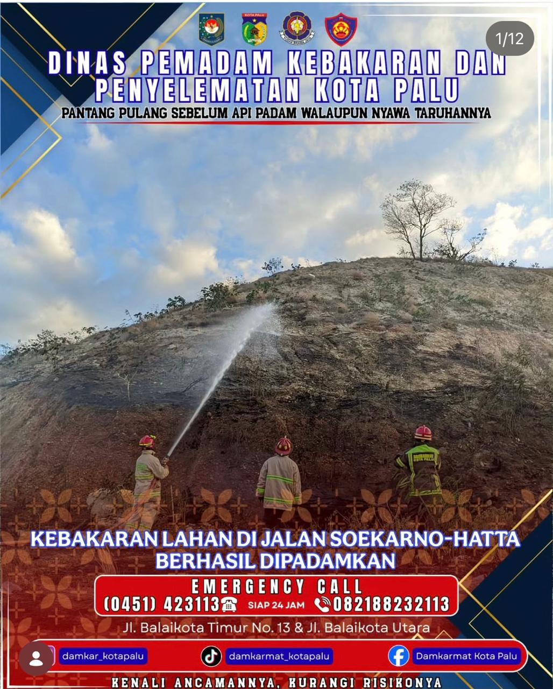
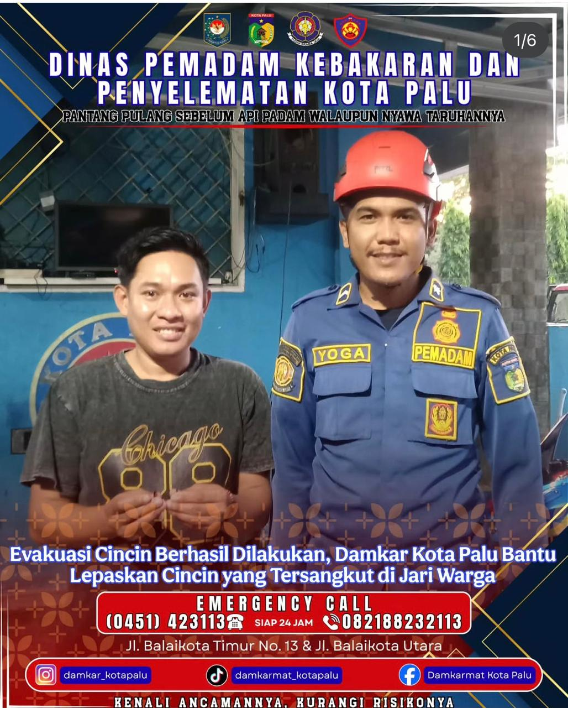
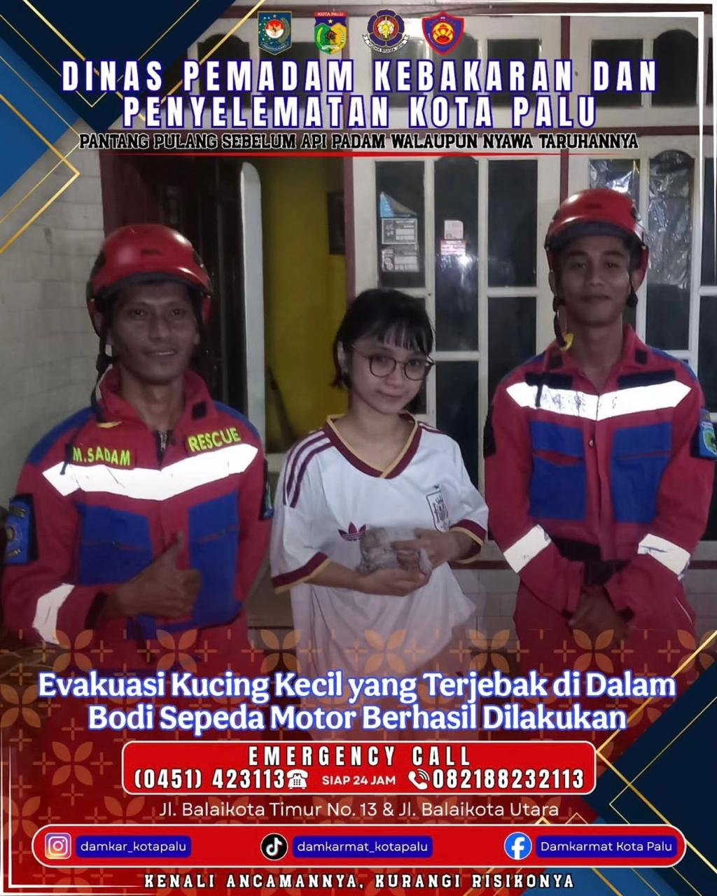

Dinas Pemadam Kebakaran
dan Penyelamatan
Kota Palu
Form Input Operasi
📸 Dokumentasi Aksi Lapangan
Potret operasional dan evakuasi tim Damkar Kota Palu.

Kebakaran Jl. Jati

Rescue Kucing

Evakuasi Cincin